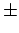

Nächste Seite: Resultate Aufwärts: Die Beispielimplementierung Vorherige Seite: Programmstart Inhalt
| Taste | Effekt | Bemerkung |
| ESC | Ende | Beendet das Programm. |
| p | Pause | Schaltet die Physik, nicht aber die Oberflächenermittlung an/aus. |
| *, / | Geschwindigkeit | Verändern die Simulationsgeschwindigkeit um  10%. |
| +, - | Zoom | Ändern die Distanz zum Zentrum um 20% |
| c | Oberfläche | Schaltet die Berechnung/Darstellung der Flüssigkeitsoberfläche an/aus. |
| t | TRUFORM | Schaltet ATI TRUFORM an/aus. (nur bei Windows) |
| n | Normalen | Schaltet die Fluidnormalen an/aus falls die Flüssigkeitsoberfläche visualisiert wird, denn nur dann werden Normalen berechnet. |
| f | flat | Schaltet das Shading auf ,,flat``. Nurnoch eine Farbe pro Dreieck. |
| g | smooth | Schaltet das Shading auf ,,smooth``. Farbe des Dreiecks wird zwischen den Ecken interpoliert. |
| y | Volumen | Gibt das von der Flüssigkeitsoberfläche umhüllte Volumen auf die Konsole aus. |
| v | Partikel | Schaltet die Partikeldarstellung an/aus. |
| l | Licht | Schaltet die Beleuchtung an/aus. |
| e | filled | Schaltet die Vorderseiten auf ,,ausgefüllt``. |
| w | wireframe | Schaltet die Darstellung auf ,,nur Kanten``. |
| q | dots | Schaltet die Darstellung auf ,,nur Punkte``. |
| TAB | Schaltet die Rückseiten auf transparent. |